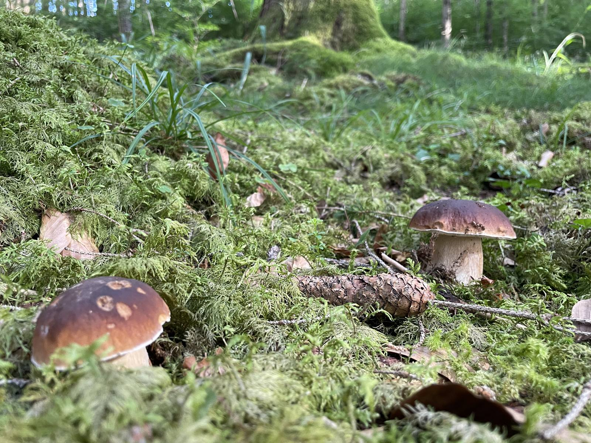
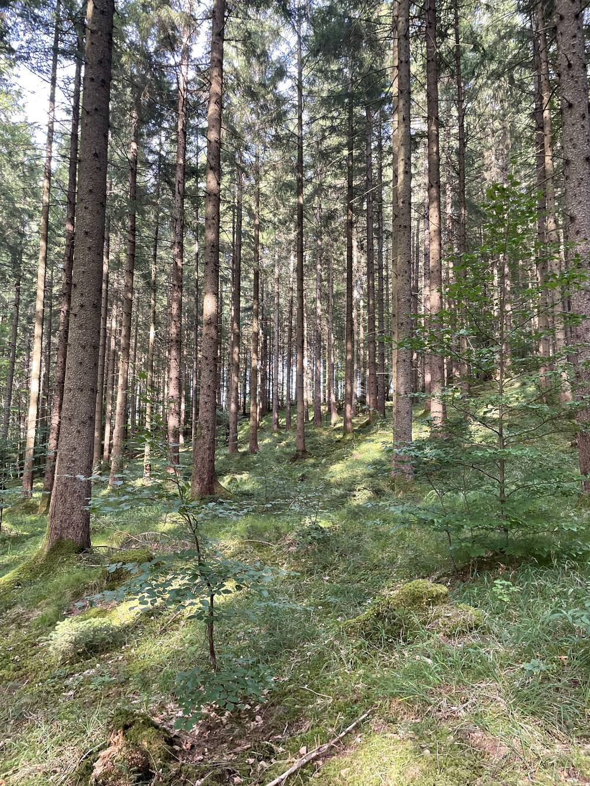
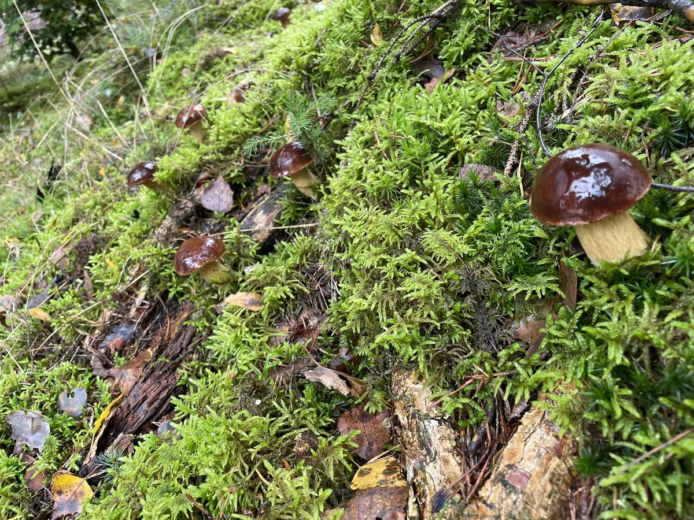
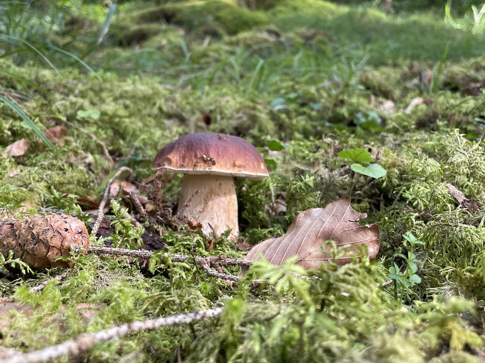
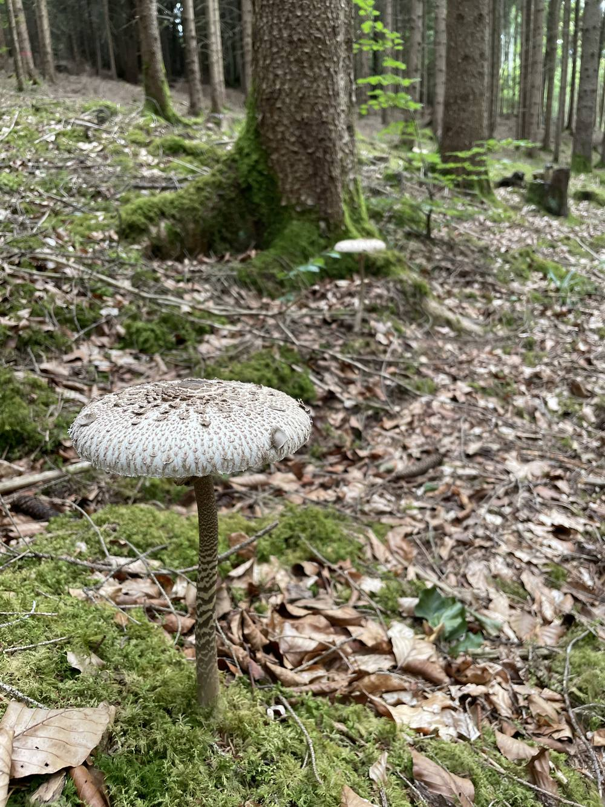
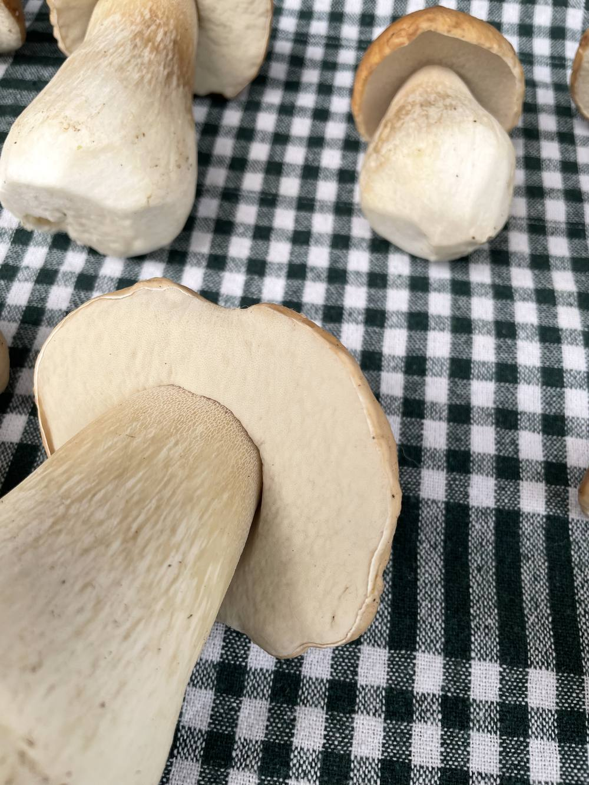

Vierzig Jahre nach 1986 ist Cäsium-137 in manchen Waldpilzen weiterhin messbar — in anderen praktisch nicht. Was die aktuellen amtlichen Messreihen zeigen, und was das für einen Korb voll Steinpilze bedeutet.
Stand September 2026 · Grundlage ist der am 26. August 2026 veröffentlichte Pilzbericht des Bundesamts für Strahlenschutz (BfS-Bericht 78/26) mit den Messwerten 2023 bis 2025, ergänzt um den AGES-Endbericht 2026 für Österreich und den BAG-Jahresbericht 2025 für die Schweiz. Alle Quellen am Ende der Seite.

Steinpilze im Spätsommer. Genau hier — in Moos, Streu und den obersten Zentimetern Boden — sitzt das Myzel. Und genau dort liegt auch das Cäsium.
Die kurze Antwort, falls du es eilig hast
Ja, es ist noch messbar. In ausgewählten bayerischen Proben fand das BfS 2023 bis 2025 vereinzelt über 1.000 Becquerel pro Kilogramm. Das sind gezielt beprobte Hotspots, nicht der Durchschnittswald.
Für normale Mengen ist die rechnerische Dosis sehr klein. Eine Pfanne mit 200 Gramm Pilzen und 1.000 Bq/kg entspricht rechnerisch 0,0026 Millisievert — rund ein Achthundertstel dessen, was jeder Mensch in Deutschland ohnehin pro Jahr an natürlicher Strahlung abbekommt.
Die Unterschiede sind riesig — und darin liegt der Hebel. Zwischen Arten, zwischen Regionen, sogar zwischen zwei Pilzen im selben Wald. Wer weiß, wo die Unterschiede herkommen, kann die eigene Aufnahme deutlich beeinflussen, ohne auf Waldpilze zu verzichten.
Woher es kommt
Ein Stoff, ein Datum, viel Regen
Es geht fast ausschließlich um Cäsium-137. Das Isotop entsteht bei der Kernspaltung und kommt in der Natur nicht vor. Der allergrößte Teil dessen, was heute in mitteleuropäischen Wäldern messbar ist, stammt aus dem Reaktorunfall von Tschernobyl im April 1986. Ein älterer, kleinerer Anteil geht auf die oberirdischen Kernwaffentests der 1950er- und 60er-Jahre zurück.
Entscheidend war das Wetter. Die Wolke zog Ende April über Mitteleuropa — und wo es in diesen Tagen regnete, wusch der Regen das Cäsium aus der Luft. Wo es trocken blieb, kam kaum etwas an. Deshalb liegen stark und schwach betroffene Flächen bis heute teils wenige Kilometer auseinander. Das BfS nennt für Süddeutschland Depositionswerte von etwa 2.000 bis 50.000 Becquerel pro Quadratmeter, mit lokal höheren Bereichen.
Deutlicher betroffen sind seither Teile des Bayerischen Waldes und des Alpenraums sowie kleinere Flecken im Donaumoos und im Raum Mittenwald. In Österreich zeigen sich höhere Werte vor allem in der Steiermark und in Alpenlagen, in der Schweiz im Tessin. Das ist eine Landkarte des Regens von 1986 — nicht mehr und nicht weniger.

Der Waldboden gibt nichts wieder her: Streu, Humus und die obersten Zentimeter halten das Cäsium fest.

Österreichische Bodenprofile zeigen: Der größte Teil des Cäsiums liegt weiterhin in den obersten 0 bis 10 Zentimetern.
Warum ausgerechnet der Wald
Auf dem Acker verschwindet es. Im Wald bleibt es.
Landwirtschaftliche Böden werden gepflügt, gekalkt und gedüngt. Das Cäsium verteilt sich in der Tiefe, wird an Tonminerale gebunden und ist für Pflanzen kaum noch verfügbar. Auf Feldern und Wiesen war das Thema deshalb schon nach wenigen Jahren weitgehend erledigt.
Der Waldboden macht das genaue Gegenteil. Er wird nie umgegraben. Was oben ankommt, bleibt oben — in der Nadelstreu, im Humus, in den obersten Zentimetern. Pflanzen und Pilze nehmen es auf, im Herbst fällt es mit Laub und Nadeln zurück auf den Boden, und der Kreislauf beginnt von vorn. Der Wald recycelt sein Cäsium.
Genau deshalb ist das Thema bei Wildpilzen und Wild bis heute relevant, bei Kulturpilzen aus dem Supermarkt dagegen nicht: Zuchtchampignons wachsen auf Substrat, nicht auf Waldboden.
Der Mechanismus
Cäsium nutzt die Wege des Kaliums
Cäsium steht im Periodensystem direkt unter Kalium und verhält sich chemisch ähnlich. Kalium ist ein lebensnotwendiger Nährstoff, und Pilze haben dafür eigene Aufnahmewege. Cäsium-Ionen (Cs⁺) können wegen dieser Ähnlichkeit teilweise dieselben Transportwege nutzen wie Kalium-Ionen (K⁺). Diese Transportwege sind allerdings durchaus teilweise selektiv — Cäsium wird also nicht einfach wie Kalium behandelt, sondern kommt nur zum Teil mit.
Dazu kommt die Bauweise: Der eigentliche Pilz ist ein Geflecht, das große Bodenvolumen durchzieht und Schichten erschließt, die Pflanzenwurzeln so nicht nutzen. Entscheidend ist die Tiefe. Ein Myzel, das genau in der Schicht wächst, in der das Cäsium liegt, nimmt viel auf. Eines, das darüber oder darunter sitzt, deutlich weniger. Da das Cäsium über die Jahrzehnte langsam nach unten wandert, verschiebt sich diese Konstellation von Art zu Art unterschiedlich.
Warum ausgerechnet Cäsium in den Pilz gelangt
Kalium und Cäsium stehen in derselben Spalte des Periodensystems, nur vier Zeilen auseinander. Elemente einer Hauptgruppe haben dieselbe Zahl an Außenelektronen — und verhalten sich chemisch entsprechend ähnlich.
Chemische Grundlagen · Einordnung für Pilze nach Heinrich 1992 und Calmon et al. 2000 · Darstellung: Pilzgebiete
Es gibt eine oft zitierte Faustregel: Pilze, die mit Baumwurzeln in Symbiose leben — Röhrlinge, Täublinge, Pfifferlinge — nehmen mehr auf als solche, die totes Holz oder Streu zersetzen. Die Regel ist brauchbar, aber sie ist keine Garantie. Eine tschechische Untersuchung von 2026 fand deutliche Effekte von Art und Fundort — die Lebensweise allein war statistisch nicht signifikant.
Die Arten
Spannweiten statt Ranglisten
Man liest oft Sätze wie „der Maronenröhrling hat X Becquerel". Solche Sätze geben die Daten nicht her. Was es gibt, sind Spannweiten: der niedrigste und der höchste Wert, der in einem Messprogramm tatsächlich aufgetreten ist. Beim Maronenröhrling reichen sie im aktuellen BfS-Bericht von 38 bis 1.400 Bq/kg — Faktor 37, gleiches Programm, gleicher Zeitraum.
Gemessene Spannweiten in Bayern, 2023 bis 2025
Jeder Balken ist die Strecke zwischen dem niedrigsten und dem höchsten veröffentlichten Messwert dieser Art. Hervorgehoben sind die vier Arten, die am häufigsten gesammelt werden. n = Zahl der veröffentlichten Mischproben.
Das ist die praktisch wichtigste Nachricht für die meisten Sammlerinnen und Sammler, und sie geht in der Diskussion oft unter. Der Fichtensteinpilz lag im BfS-Bericht 2023 bis 2025 zwischen 29 und 210 Bq/kg (n = 19) — durchgehend unter der viel zitierten 600er-Marke. In Österreich wurden 57 Steinpilzproben untersucht: Der Median lag bei 24 Bq/kg, ein einzelner Ausreißer bei 783.
Zum Vergleich derselbe österreichische Datensatz für den Maronenröhrling: Median 118 Bq/kg bei 45 Proben. Beide gehören zu den Dickröhrlingsverwandten, beide leben in Symbiose mit Nadelbäumen — und trotzdem liegt der typische Steinpilzwert rund fünfmal niedriger. Wer beides findet und die Aufnahme klein halten will, hat hier eine sehr einfache Stellschraube.
Der Pfifferling liegt ebenfalls meist im niedrigen Bereich: österreichischer Median 45 Bq/kg bei 51 Proben, deutsche Spanne 25 bis 520 bei allerdings nur sieben Proben. Am niedrigsten von allen liegt der Parasol — in Deutschland 0,3 bis 10 Bq/kg, in Österreich lag der Median unterhalb der Nachweisgrenze. Er ist der einzige Fall im gesamten Datensatz, bei dem beide Länder über alle Standorte hinweg dasselbe zeigen.
Regelmäßig hohe Werte erreichen dagegen die Semmelstoppelpilze, der Trompetenpfifferling und der Reifpilz. Beim Reifpilz lag der österreichische Median bei 481 Bq/kg — höher als das Maximum vieler anderer Arten.

Fichtensteinpilz: in Deutschland 29–210 Bq/kg, in Österreich ein Median von 24 bei 57 Proben.

Parasol: die durchgehend niedrigsten Werte in beiden Messprogrammen.
Der wichtigste Faktor
Der Ort schlägt die Art
Wenn man nur eine Sache aus dieser Seite mitnimmt, dann diese: Wo der Pilz gewachsen ist, zählt mehr als seine Art. Dasselbe BfS-Programm, dasselbe Jahr, dasselbe Laborverfahren — und zwei völlig verschiedene Bilder.
Zwei bayerische Messstandorte im Jahr 2024
Freising liegt im flachen Umland von München, Bayerisch Eisenstein im Bayerischen Wald an der tschechischen Grenze. Der Unterschied im Median beträgt Faktor 30.
In Freising überschritt 2024 keine einzige der 29 Mischproben die 600er-Marke, das Maximum lag bei 96 Bq/kg. In Bayerisch Eisenstein lagen elf von 34 Proben darüber, der Höchstwert bei 2.000. Nicht weil dort andere Pilze wachsen — sondern weil es Ende April 1986 dort anders geregnet hat.
Das gilt allerdings auch in die andere Richtung, und deshalb sind Karten mit Ampelfarben in die Irre führend: Die Streuung innerhalb eines einzelnen Waldstücks kann größer sein als der Unterschied zwischen zwei Jahren. Eine Depositionskarte sagt, wo 1986 mehr ankam. Sie sagt nicht, wie viel in dem Pilz steckt, den du gerade in der Hand hältst. Das kann nur eine Messung dieser Probe.
Und jetzt die Größenordnung
0,0026
Millisievert — eine Pfanne Pilze mit 1.000 Becquerel pro Kilo
Das ist der Punkt, an dem die meisten Berichte über dieses Thema aufhören und an dem es eigentlich erst interessant wird. Becquerel misst, wie viele Atomkerne pro Sekunde zerfallen. Das sagt für sich genommen noch nichts darüber, was im Körper ankommt. Dafür gibt es das Sievert.
Das BfS rechnet für Erwachsene mit einem Faktor von 1,3 × 10⁻⁸ Sievert pro aufgenommenem Becquerel. Eine Portion von 200 Gramm mit 1.000 Bq/kg enthält 200 Becquerel und ergibt damit rechnerisch 0,0026 Millisievert.
Zum Vergleich: Die mittlere natürliche Strahlenexposition in Deutschland liegt bei rund 2,1 Millisievert pro Jahr — aus Boden, Gestein, Höhenstrahlung und der eigenen Nahrung. Die Pilzpfanne macht davon etwa ein Achthundertstel aus. Der Vergleich dient der Größenordnung; es sind unterschiedliche Expositionspfade.
Die Menge macht es
Nicht die einzelne Mahlzeit zählt. Die Summe zählt.
Die rechnerische Dosis steigt linear: mit der Konzentration, mit der Portionsgröße und mit der Häufigkeit. Eine einzelne Mahlzeit ist deshalb praktisch immer unerheblich — auch eine mit einem hohen Messwert. Relevant wird es erst, wenn jemand über eine ganze Saison sehr viel isst, in einer betroffeneren Region sammelt und dabei bevorzugt die stark akkumulierenden Arten mitnimmt.
Von Becquerel zu Millisievert
Die beiden Einheiten messen zwei verschiedene Dinge. Erst die Rechnung dazwischen macht aus einem Messwert eine Aussage über den Menschen.
Dosiskoeffizient für Erwachsene nach BfS-Bericht 78/26 (2026), S. 19 · Darstellung: Pilzgebiete
Vier Szenarien, jeweils 200 Gramm pro Mahlzeit
Der graue Balken entspricht der mittleren natürlichen Strahlenexposition in Deutschland von 2,1 Millisievert pro Jahr. Selbst das äußerste Szenario — jede Woche das ganze Jahr über Pilze mit 5.000 Bq/kg — bleibt darunter.
Modellrechnung nach BfS-Bericht 78/26 (2026), S. 19. Konstante Portion und Konzentration unterstellt · Darstellung: Pilzgebiete
Das dritte Szenario ist ein Rechenbeispiel des BfS selbst: 50 Mahlzeiten à 200 Gramm Maronenröhrlinge mit 1.400 Bq/kg — also der höchste Maronenwert des gesamten aktuellen Berichts, fünfzigmal im Jahr — ergeben rund 0,18 Millisievert. Das ist weniger als ein Zehntel der natürlichen Jahresexposition.
Wir schreiben das nicht, um das Thema kleinzureden. Wir schreiben es, weil die Zahl bei diesem Thema fast nie mitgeliefert wird — und weil Vorsicht ohne Größenordnung schnell zu Angst wird, die nichts verbessert. Wer ein paar Mal im Jahr eine Pfanne Waldpilze isst, bewegt sich rechnerisch in Bereichen, die gegenüber der natürlichen Exposition kaum ins Gewicht fallen.
Die Zahl, die alle kennen
600 Becquerel pro Kilo ist kein Gesundheitsgrenzwert
Die 600 stehen in jedem Zeitungsartikel — meistens ohne dazuzusagen, woher sie kommen. Die Durchführungsverordnung (EU) 2020/1158 regelt die Einfuhr bestimmter Lebensmittel aus gelisteten Drittländern nach Tschernobyl und nennt seit der Änderung 2024 diesen Wert für die betroffenen Erzeugnisse. Die Empfehlung 2003/274/Euratom bittet die Mitgliedstaaten, einen vergleichbaren Wert beim Inverkehrbringen von Wildpilzen, Wild und Beeren zu beachten — eine Empfehlung, keine Verordnung.
Behörden in Deutschland und Österreich behandeln 600 Bq/kg in der Marktüberwachung als maßgeblichen Wert: Was gehandelt wird, soll darunter liegen. Für privat gesammelte Pilze im eigenen Korb greift diese Logik nicht. Das Kantonale Labor Zürich stellt für einheimische, selbst gesammelte Pilze ausdrücklich fest, dass es dafür keine gesetzliche Vorgabe gibt.
Die Zahl ist also eine Handelsregel, kein medizinischer Schwellenwert. Sie ist trotzdem nützlich — als gemeinsamer Bezugspunkt, an dem man Messwerte einordnen kann. Nur bedeutet ein Wert von 650 nicht „gefährlich" und einer von 550 nicht „unbedenklich".
Wie lange noch
Zwei Antworten, die beide stimmen
Physikalisch ist der Fall klar: Cäsium-137 hat eine Halbwertszeit von rund 30 Jahren. Von der Menge, die 1986 auf den Boden kam, sind heute noch etwa 40 Prozent übrig.
Physikalischer Zerfall von Cäsium-137 seit 1986
Die Kurve beschreibt, wie viele Cäsium-137-Atome noch vorhanden sind. Sie beschreibt nicht, wie viel davon ein bestimmtes Pilzmyzel erreicht.
Halbwertszeit rund 30 Jahre · Einordnung nach BfS-Bericht 78/26 (2026) · Darstellung: Pilzgebiete
Ökologisch ist es komplizierter. Die Werte in Pilzen folgen dieser Kurve nicht sauber. Cäsium wandert im Bodenprofil nach unten, wird an Tonminerale gebunden, aus organischem Material wieder freigesetzt — und trifft dabei je nach Art unterschiedlich tief sitzende Myzelien. Bei manchen Arten sanken die Werte deshalb früher als erwartet, bei anderen stiegen sie zwischenzeitlich sogar an.
Eine allgemeingültige „Pilz-Halbwertszeit" gibt es nicht. Was sich beobachten lässt: Die historischen Spitzenwerte sind deutlich gefallen. Maronenröhrlinge lagen an BfS-Standorten in den Jahren 2002 bis 2004 bei bis zu rund 12.000 Bq/kg. Im aktuellen Dreijahresfenster liegt das Maximum bei 1.400. Weil sich Standorte und Artenzusammensetzung zwischen den Berichten unterscheiden, ist das keine saubere Trendrechnung — die Größenordnung des Rückgangs ist aber eindeutig.
In der Küche
Was tatsächlich etwas bringt
Cäsium-Ionen sind wasserlöslich. Daraus folgt die einzige Küchenmaßnahme, für die es belastbare Studien gibt — und auch gleich das häufigste Missverständnis.
Wirkt: abkochen oder einweichen und das Wasser wegschütten. Eine kontrollierte Studie fand beim Kochen von Pfifferlingen bis zu 29 Prozent Reduktion; vorheriges Waschen erhöhte den Effekt. Bei Steinpilzen senkte Blanchieren mit anschließendem Einlegen den Gehalt um 77 Prozent, bezogen auf die Frischmasse. Entscheidend ist, dass die Flüssigkeit weggeschüttet wird — bleibt sie im Gericht, ist das Cäsium nur umverteilt.
Wirkt nicht: trocknen. Trocknen entfernt Wasser, nicht Cäsium. Die Becquerel-pro-Kilo-Zahl steigt dabei sogar deutlich, während die Gesamtmenge im Pilz gleich bleibt. Deshalb darf man einen Messwert von Trockenpilzen nie direkt mit einem Frischmassewert vergleichen.
Wirkt nicht: einfrieren. Für sich genommen keine Wirkung. Durch die Zellschädigung kann sich allerdings verändern, wie viel beim späteren Blanchieren austritt.
Nicht belegt: schälen. Dafür gibt es keine belastbaren mitteleuropäischen Daten. Auch die Unterschiede zwischen Hut und Stiel sind je nach Art und Studie uneinheitlich.
Die Spanne in der Literatur reicht von etwa 20 bis über 90 Prozent — je nach Art, Stückgröße, Verhältnis von Pilz zu Wasser, Salzzugabe und Kochdauer. Es gibt keine feste Küchenformel, nur ein zuverlässiges Prinzip.

Klein geschnitten tritt beim Abkochen mehr aus als am Stück — das ist der Grund, warum Studien so unterschiedliche Prozentwerte finden.
Fazit
Wir sammeln weiter. Nur ein bisschen bewusster.
Die Daten zeigen kein Verbot, sondern eine Bandbreite — und drei Stellschrauben, die jede und jeder selbst in der Hand hat: welche Arten man mitnimmt, wo man sammelt und wie viel davon regelmäßig auf dem Teller landet. Wer den Steinpilz stehen lässt, weil er Angst vor Cäsium hat, hat die Zahlen nicht gesehen. Wer über Jahre wöchentlich Semmelstoppelpilze aus dem Bayerischen Wald isst, ohne die Zahlen zu kennen, aber eben auch nicht.
Genau dazwischen liegt das, was wir mit dieser Seite wollen: nicht warnen, sondern informieren. Radioaktivität sagt im Übrigen nichts über die Essbarkeit eines Pilzes aus — die entscheidende Frage beim Sammeln bleibt eine ganz andere.
Alle Zahlen auf dieser Seite stammen aus den folgenden Veröffentlichungen. Die amtlichen Berichte sind frei abrufbar; Grafiken und Text auf dieser Seite sind eigene Darstellungen.
Kabai, E.; Steiner, M.; Hamer, A. — Radioaktive Kontamination von Speisepilzen (Stand 2026, Messwerte 2023 bis 2025). BfS-Berichte 78/26, Bundesamt für Strahlenschutz, 26.08.2026. Grundlage der deutschen Artenspannweiten, der Standortvergleiche und der Dosisrechnung. PDF beim BfS
AGES / Landstetter, C. — Endbericht: Verteilung der Radionuklide im Waldökosystem. Österreichische Agentur für Gesundheit und Ernährungssicherheit, 2026, Proben aus 2022 und 2023. Grundlage der österreichischen Mediane und Bodenprofile. Bericht bei der AGES
Bundesamt für Gesundheit — Umweltradioaktivität und Strahlendosen in der Schweiz 2025. Veröffentlicht am 06.08.2026. Grundlage der Schweizer Angaben. PDF beim BAG
Durchführungsverordnung (EU) 2020/1158 in der konsolidierten Fassung vom 07.02.2024 sowie Empfehlung 2003/274/Euratom. Grundlage des Abschnitts zu den 600 Bq/kg. EUR-Lex 2020/1158 · EUR-Lex 2003/274
Kantonales Labor Zürich — Sind essbare Wildpilze aus dem Kanton Zürich gesund? 31.07.2024. Grundlage der Aussage zur fehlenden gesetzlichen Vorgabe für selbst gesammelte Pilze in der Schweiz. Mitteilung des Kantons Zürich
Šlemar, D.; Litomiská, B.; Řezanka, P. — Investigation of long-term caesium-137 radioactivity in fungal species of the Czech Republic. Radiation and Environmental Biophysics, 2026. Grundlage der Aussage zur Lebensweise. doi.org/10.1007/s00411-026-01244-5
Calmon, P. et al. — A review of 137Cs transfer to fungi. Journal of Environmental Radioactivity 48 (2000) 95–121, sowie Heinrich, G. — Uptake and transfer factors of 137Cs by mushrooms. Radiation and Environmental Biophysics 31 (1992) 39–49. Grundlage der Aussagen zu Aufnahmemechanismus und Streubreite. doi 10.1016/S0265-931X(99)00060-0 · doi 10.1007/BF01211511
Steinhauser, G.; Steinhauser, V. — A Simple and Rapid Method for Reducing Radiocesium Concentrations in Wild Mushrooms in the Course of Cooking. Journal of Food Protection 79 (2016) 1995–1999, sowie Saba, M.; Falandysz, J. — The effects of different cooking modes on 137Cs, 40K, and total K content in Boletus edulis. Environmental Science and Pollution Research 28 (2021) 12441–12446. Grundlage des Küchenabschnitts. doi 10.4315/0362-028X.JFP-16-236 · doi 10.1007/s11356-020-11147-7
IAEA — Environmental Consequences of the Chernobyl Accident and their Remediation. Wien, 2006. Grundlage der Aussagen zum Waldkreislauf. PDF bei der IAEA
Hinweis. Pilzgebiete ist keine Behörde und keine Ernährungsberatung. Diese Seite fasst öffentlich zugängliche amtliche Messberichte und Fachliteratur zusammen und ersetzt weder eine Laboranalyse noch eine ärztliche oder lebensmittelrechtliche Beratung. Die Messprogramme des BfS und der AGES beproben gezielt ausgewählte Arten an ausgewählten Standorten; sie sind kein repräsentativer Querschnitt aller Wälder. Die Aktivität eines konkreten Fundes lässt sich nur durch die Messung dieser Probe bestimmen. Angaben zur Radioaktivität sagen nichts über die Essbarkeit oder Giftigkeit eines Pilzes aus — iss nie einen Pilz, den du nicht sicher bestimmt hast, und frage im Zweifel eine Pilzsachverständige oder einen Pilzsachverständigen.